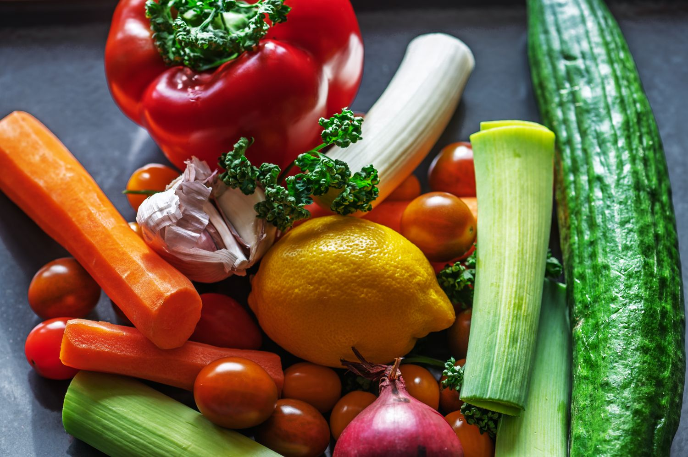

Understand
Get clear, evidence-informed answers in a world full of nutrition noise.

Daniela “Dani” Lima · RDN, LD
Personalized nutrition support for chronic disease, with practical steps that fit your food, your home and your life.
Nourishing your body, mind & well-being
Support without overwhelm
Health starts at home. You deserve trustworthy guidance and a supportive partner as you make changes for your well-being.

Dani helps people and families navigate nutrition changes with clear information, realistic goals and compassion. Her approach considers food alongside mindset, movement and the routines that shape daily life.
Read Dani’s story ↗Get clear, evidence-informed answers in a world full of nutrition noise.
Build nutrition plans around your health needs, preferences and life.
Make changes with a guide who helps you feel less alone.
Meet Dani
Daniela Lima, known as Dani, is a Brazilian-born dietitian who came to the United States for college. Her own experience seeing a loved one face dietary changes helped shape her mission to make nutrition support feel clearer and more compassionate.
Dani remembers how overwhelming nutrition changes can feel, even with nutrition training. Good Health Organizing grew from her wish to offer the guide she wished she had.
She believes health starts at home and originally brought nutrition education together with pantry organization.
Dani helps clients use current nutrition information, plan meals and create routines that work in real life, including virtual support.
Whole-person wellness
Good Health Organizing brings evidence-informed nutrition together with practical lifestyle support for people managing health conditions and everyday goals.
Personalized services
Choose a one-on-one consultation, an individualized meal plan or help making your kitchen work better for you.
Discuss your goals, eating habits, health needs and next steps with a licensed dietitian. Sessions are available in 30, 60 and 90-minute options.
See consultation details ↗Personalized recipes, a six-day menu, grocery list and preparation instructions for chronic disease wellness and your dietary preferences.
Explore meal plans ↗Kitchen, pantry and dining-area organization can support calmer routines, easier meal preparation and a more comfortable home.
Learn about Dani’s approach ↗Meal planning made personal
The Good Health Organizing chronic-disease meal plan pairs individualized nutrition guidance with recipes and practical preparation support.
View the meal planAn initial one-on-one consultation explores your health needs, food preferences and routine.
Breakfast, lunch, dinner and snack suggestions, with one or two flexible days for choice.
A grocery list, customized recipes and step-by-step preparation instructions help simplify the week.
A follow-up consultation is included to review questions and make adjustments.

Current listed rates
The website currently lists these one-on-one wellness consultation options. Confirm rates before publishing because service pricing may change.
See current service details ↗Learn and get inspired
Find practical recipes and articles on chronic disease, family nutrition and everyday wellness.
Browse ideas for meals, snacks and a range of tastes.
Read about diabetes, heart health, blood pressure and family nutrition.
Learn about sessions, payment, scheduling and wellness organizing.
A little more about Dani
Dani shares that she loves cooking, keeps more than 60 houseplants and enjoys skydiving, cycling, hiking, running and traveling.
Registered Dietitian · Wellness Organizer
Her work combines nutrition knowledge with practical, individualized guidance to make daily changes feel more manageable.
Connect on LinkedIn ↗Stay connected
Find Dani’s latest recipes, nutrition tips and updates from the practice.
Get in touch
Talk with Dani about your health goals, questions or how nutrition and wellness organizing could support your routine.
Contact DaniCall 330-944-4112 ↗Make your own palette
For clear contrast, pair a light page with dark text or a dark page with light text.